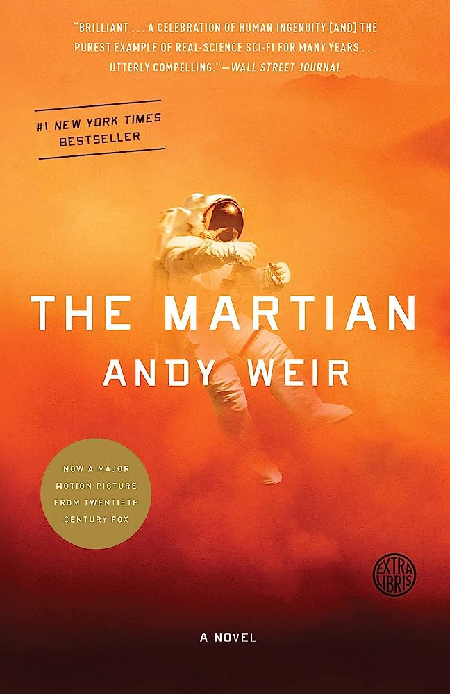
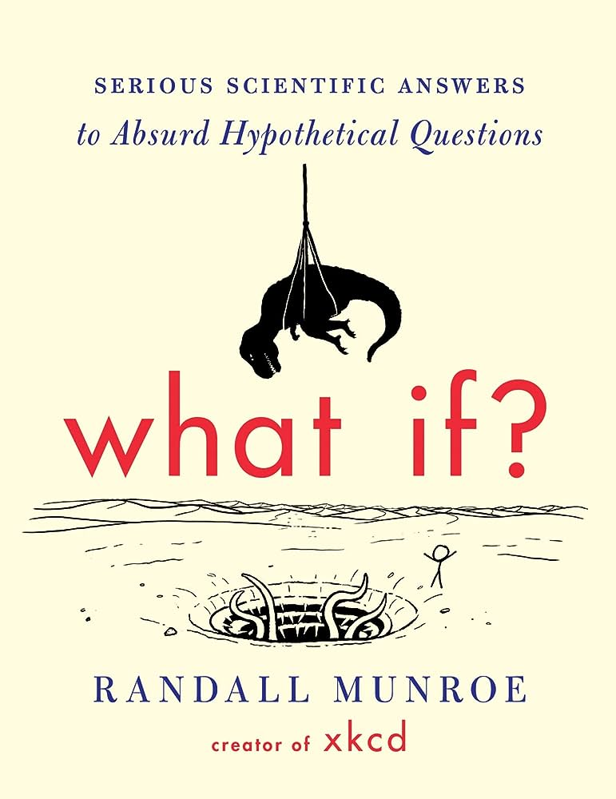
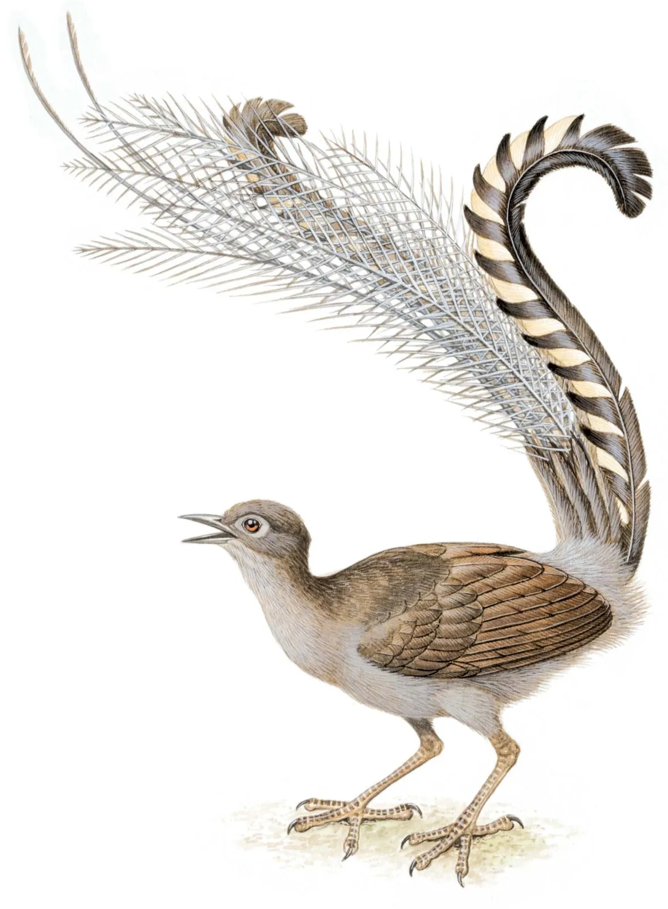
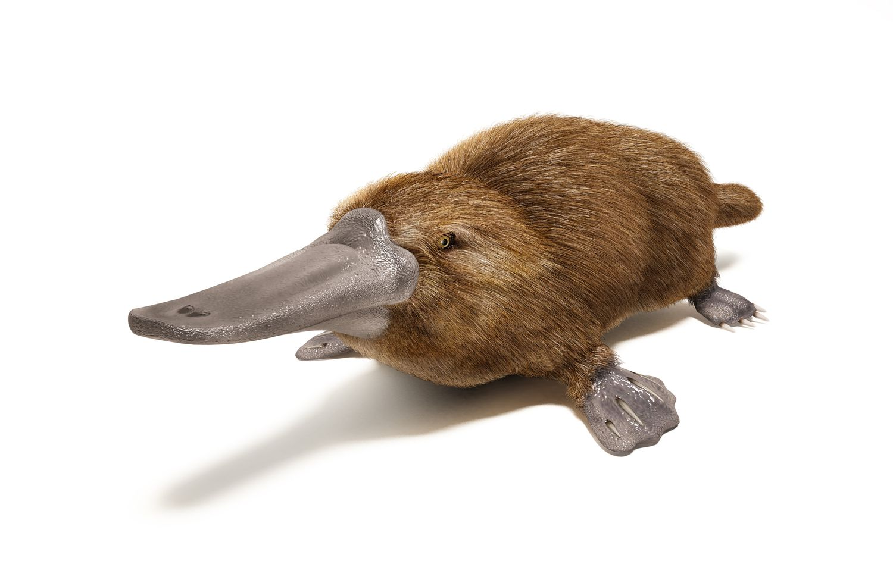

Reading is one of my favourite things to do in my spare time. Here are a few books that I have read and enjoyed in the past.

The Martian by Andy Weir. It was originally self-published by the author on his blog in 2011, and since then, has become a movie - which is supposed to be really good (according to my grade nine science teacher who caught me reading in class). Here is a short summary about the book:
Six days ago, astronaut Mark Watney became one of the first people to walk on Mars. Now, he’s sure he’ll be the first person to die there. After a dust storm nearly kills him and forces his crew to evacuate while thinking him dead, Mark finds himself stranded and completely alone with no way to even signal Earth that he’s alive—and even if he could get word out, his supplies would be gone long before a rescue could arrive. Chances are, though, he won’t have time to starve to death. The damaged machinery, unforgiving environment, or plain-old “human error” are much more likely to kill him first. But Mark isn’t ready to give up yet. Drawing on his ingenuity, his engineering skills — and a relentless, dogged refusal to quit — he steadfastly confronts one seemingly insurmountable obstacle after the next. Will his resourcefulness be enough to overcome the impossible odds against him?

Fans of xkcd ask Munroe a lot of strange questions. What if you tried to hit a baseball pitched at 90 percent the speed of light? How fast can you hit a speed bump while driving and live? If there was a robot apocalypse, how long would humanity last? What if everyone only had one soulmate? What would happen if the moon went away? In pursuit of answers, Munroe ran computer simulations, pored over stacks of declassified military research memos, solved differential equations, and consulted with nuclear reactor operators. His responses are masterpieces of clarity and hilarity, complemented by signature xkcd comics. (They often predict the complete annihilation of humankind, or at least a really big explosion.) Far more than a book for geeks, What If? explains the laws of science in operation in a way that every intelligent reader will enjoy and feel much smarter for having read.
The Carbon Diaries by Saci Lloyd. This book gets an honourable mention because I am reading it right now. It isn't THAT good, so I won't include a summary about the book.
As of today, I have finished the book, and let me just tell you, it is horrible. In concept, the book would've been good, but the author butchered the book. Her writing style didn't match the "vibe" of the book.
 
Two of my favorite animals are the Lyrebird and the Platypus.
Lyrebirds because they are smarter than they are pretty - and they are stunning. They are extremely good expert mimics and are able to copy both natural and mechanical sounds. Sounds like other birds, chainsaws, car engines and barking dogs!
I just like platypuses because they make no sense what-so-ever. Like how did evolution cause egg-laying venomous mammals that glow under UV light (we don't even know why They do) to exist. They literaly use electronic impulses to detect underwater prey and locate objects in water. THEY USE ELECTRICITY TO HUNT! How cool/weird is that?
I'll be honset with you, I wasn't sure what to put as my third favourite thing, because if I put my favorite color (black), I just knew you would say "that isn't a color". Sooo... Yes. I like raspberries. I think that it is fascinating that an invasive plant can be so delicious.